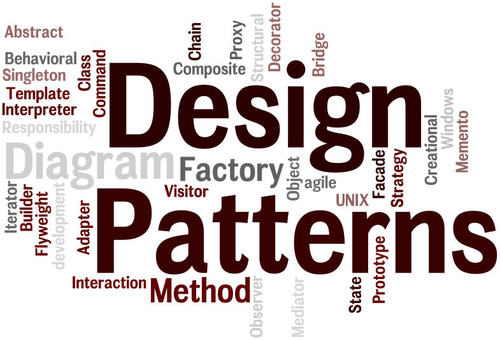

“OBJECTS 15장”
디자인 패턴

- 소프트웨어 설계에서 반복적으로 발생하는 문제에 대해 반복적으로 적용할 수 있는 해결 방법
- 목적 : 설계의 재사용
- 다양한 변경을 다루기 위해 반복적으로 재사용할 수 있는 설계 묶음
- 특정한 변경을 일관성 있게 다룰 수 있는 협력 템플릿 제공
- 협력을 일관성 있게 만들기 위해 재사용할 수 있는 설계의 묶음
프레임 워크
- 설계와 코드를 함께 재사용
- 변경을 일관성 있게 다룰 수 있는 확장 가능한 코드 템플릿 제공
- 일관성 있는 협력을 제공하는 확장 가능한 코드
디자인 패턴과 설계 재사용
소프트웨어 패턴
… 패턴 정의는 하나의 실무 컨텍스트에서 유용하게 사용해 왔고 다른 실무 컨텍스트에서도 유용할 것이라고 예상되는 아이디어다.
- 3의 규칙
- 최소 세가지의 서로 다른 시스템에 특별한 문제 없이 적용할 수 있고 유용한 경우에만 패턴으로 간주 할수 있음
- 패턴의 가장 큰 가치는 경험을 통해 축적된 실무 지식을 효과적으로 요약하고 전달
- 패턴 언어
- 연관된 패턴들의 집합들이 모여 하나의 패턴 언어를 구성
- 패턴의 생성 규칙과 함께 패턴 언어에 속한 다른 패턴과의 관계 및 협력 규칙을 포함
- 패턴 시스템
패턴 분류
아키텍처 패턴
- 디자인 패턴의 상위 패턴
- 소프트웨어의 전체적인 구조 결정
- 미리 정의된 서브시스템을 제공, 책임을 정의, 관계를 조직화하는 규칙과 가이드라인 포함
- 프로그래밍 언어나 패러다임에 독립적
디자인 패턴
- 일반적인 설계 문제를 해결
- 협력하는 컴포넌트들 사이에서 반복적으로 발생하는 구조를 서술
- 중간 규모의 패턴
- 프로그래밍 언어나 패러다임에 독립적
이디엄
- 디자인 패턴의 하위 패턴
- 특정 프로그래밍 언어에만 국한된 하위 레벨 패턴
- 주어진 언어의 기능을 사용해 컴포넌트 혹은 컴포넌트 간의 특정 측면을 구현하는 방법을 서술
- 언어에 종속적
분석 패턴
- 도메인 내 개념적인 문제를 해결
- 업무 모델링 시 발견되는 공통적인 구조를 표현하는 개념들의 집합
패턴과 책임-주도 설계
- 패턴은 공통으로 사용할 수 있는 역할, 책임, 협력의 템플릿
- 패턴의 세부적인 내용이 중요하지 않음
- 특정 상황에서 적용할 수 있는 설계를 빠르고 쉽게 떠올릴 수 있다는 사실이 중요
- 패턴의 구성 요소는 클래스와 메서드가 아닌
역할과책임 - 패턴 템플릿을 구현할 수 있는 다양한 방법이 존재
- 디자인 패턴을 따르는 것은 특정한 구현 방식을 강제하는 것은 아님
디자인 패턴은 단지 역할과 책임, 협력의 템플릿을 제안할 뿐 구체적인 구현 방법에 대해서는 제한을 두지 않는다.
패턴
Strategy 패턴(전략 패턴)
- 다양한 알고리즘을 동적으로 교체 할 수 있는 역할과 책임의 집합 제공
Bridege 패턴
- 역할과 책임을 추상화와 구현의 두개의 커다란 집합으로 분해, 설계 확장 가능
- 구현(implementation)으로부터 추상(abstraction) 레이어를 분리하여 이 둘이 서로 독립적으로 변화
Composite 패턴
- 협력에 참여하는 객체들의 역할 : Component, Composite, Leaf
- Component : 구체적인 부분
- Leaf 클래스와 전체에 해당하는 Composite 클래스에 공통 인터페이스를 정의
- Composite
- 전체 클래스
- Leaf
- 구체적인 부분 클래스
- Composite 객체의 부품으로 설정
- Component : 구체적인 부분
- 한 객체가 세 역할을 모두 수행할 수 있음
- 다수의 클래스가 동일한 역할을 구현할 수 있음
- 협력에 참여하는 객체들의 역할 : Component, Composite, Leaf
Observer 패턴

- 유연한 통지 메커니즘을 구축하기 위해 객체 간 결합도를 낮출 수 있는 역할과 책임의 집합 제공
- 대상 객체의 관리를 Subject 클래스와 Obaserver 인터페이스로 일반화
- 한객체의 상태가바뀌면 그 객체에 의존하는 다른 객체들한테 연락이 가고 자동으로 내용이 갱신되는 방식
캡슐화와 디자인 패턴
- 디자인 패턴의 구현 방법이나 구조가 아닌 어떤 패턴이 어떤 변경을 캡슐화하는지 이해하는 것이 중요
패턴
- Template Method 패턴
- 전체적으로는 동일하면서 부분적으로는 다른 구문으로 구성된 메서드의 코드 중복을 최소화
- 변경하지 않는 부분은 부모, 변하는 부분은 자식 클래스로 분리함으로써 변경을 캡슐화
- 캡슐화를 위해 상속관계 사용

- Decorator 패턴
- 객체의 행동을 동적으로 추가할 수 있게 해주는 패턴
- 객체의 행동을 결합하기 위해 합성 사용
- Strategy 패턴
- 알고리즘의 변경을 캡슐화
- 구현을 위해 객체의 합성 사용
패턴은 출발점이다
- 패턴 만능 주의
- 컨텍스트의 적절성은 무시한 채 패턴의 구조에만 초점을 맞춤
- 명확한 트레이트 오프 없이 패턴을 남용하면 설계가 불필요하게 복잡해짐
- 패턴을 현재 문맥에 적합하도록 적절하게 수정
프레임워크와 코드 재사용
코드 재사용 대 설계 재사용
설계 재사용
- 디자인 패턴은 프로그래밍 언어에 독립적
- 디자인 패턴의 적용을 위해서 설계 아이디어를 프로그래밍에 맞춰 가공, 구현 코드 재작성 해야함
- 재사용을 위해 매번 유사한 코드 작성해야 함
코드 재사용
- 다양한 도메인에 재사용 가능한 컴포넌트라는 개념은 비현실적
- 소프트웨어 다양성
가장 이상적인 재사용 방법은? 설계 재사용 + 코드 재사용
프레임워크
- 정의
- 추상 클래스나 인터페이스를 정의하고 인스턴스 사이의 상호작용을 통해 시스템 전체 혹은 일부를 구현해 놓은 재사용 가능한 설계
- 애플리케이션 개발자가 현재의 요구사항에 맞게 커스터마이징 할 수 있는 애플리케이션의 골격
- 애플리케이션 아키텍처를 제공 + 문제 해결에 필요한 설계 결정과 기반 코드 함께 포함
- 확장을 위해 부분적으로 구현된 추상클래스와 인터페이스 집합
- 재사용 가능한 다양한 컴포넌트 함께 제공
프레임워크는 애플리케이션에 대한 아키텍처를 제공한다. 즉 프레임워크는 클래스와 객체들의 분할, 전체 구조, 클래스와 객체들 사이의 상호작용, 객체와 클래스 조합 방법, 제어흐름에 대해 미리 정의한다.
… 애플리케이션 설계자나 구현자는 애플리케이션에 종속된 부분에 대해서만 설계하면 된다.
상위 정책과 하위 정책으로 패키지 분리하기
- 전통적인 소프트웨어 개발 방법의 경우 상위 레벨 모듈이 하위 레벨 모듈에, 상위 정책이 세부 하상에 의존하도록 구성됨
- 상위 정책 / 상위 사항
- 상대적으로 변경에 안정적
- 세부 사항에 비해 재사용 가능성 높음
- 세부 정책 / 세부 사항
- 세부사항은 자주 변경됨
- 배포 단위
- 별도의 패키지로 분리
- 컨텍스트 독립성의 패키지 버전
- 여러 애플리케이션에 걸쳐 일관성 있는 협력을 구현할 수 있게 해줌
- 동일한 애플리케이션은 구현 방식에 일관성이 있기 때문에 이해가 쉬움
제어 역전 원리
좋은 객체 지향 설계의 증명이 바로 이와 같은 의존성 역전이다.
- 제어의 역전
- 할리우드 원리
- 훅(hook)
- 애플리케이션에 따라 달라질 수 있는 특정한 동작
- 훅의 구현 방식은 애플리케이션의 컨텍스트에 따라 달라짐
- 협력을 제어하는 것은 프레임워크
- 개발자는 프레임워크가 호출하는 코드만을 작성함
- 제어의 흐름이 역전
출처
https://gmlwjd9405.github.io/2018/08/10/composite-pattern.html
https://flowarc.tistory.com/entry/디자인-패턴-옵저버-패턴Observer-Pattern
https://gmlwjd9405.github.io/2018/07/13/template-method-pattern.html